@sticky-add: @:libyli
@:title-slide /no-status no-libyli
# // comment
- {{ nd.vars.author }}
-
- Talk at {{ nd.vars.venue }}, {{ nd.vars.date }}
# $whoami
@:#overview overview no-libyli
## Overview
- Introduction
- Imbalanced classification problems
- The Problem (and performance measures)
- Reweight, resampling, etc
- Correcting k-NN (*$\gamma$-NN@:accro*)
- Focusing on the F-Measure optimization (*CONE@:accro*)
- Interpretability
- Pleading for interpretability
- Adversarial Input↔Parameter Regularization (*AI↔PR@:accro*)
- Previous, current and future approaches
- Discussion
@eval-header: $o.s = 2
@eval-header: return highlightLi($o.s, 1)
# @copy: overview
## Imbalanced Problems: Examples // generally, but at the lab
- Anomaly detection *// incl images*
- unsafe situations in videos // bluecime, first step into it for me
- defect detection in images // often as out-of-distribution though
- anormal heart beat in ECG
- Fraud detection
- fraudulent checks
- credit card fraud (physical, online)
- financial fraud (French DGFIP) // Dir. Géné. des Fin. Pub.
- @:displaynone // TODO: add illustr
## Imbalanced Classification Problems // generally, but at the lab
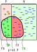
- Binary classification
- $+$ positive class: minority class, anomaly, rare event, … {.no}
- $-$ negative class: majority class, normality, typical event, … {.no}
- Confusion matrix (of a model vs a ground truth)
- TP: true positive
- FP: false positive
- TN: true negative
- FN: false negative
- Some measures {.padli .densemath}
- Precision: $prec=\frac{TP}{TP+FP}$
- Recall: $rec=\frac{TP}{P} = \frac{TP}{TP+FN}$
- $F_\beta$-measure: $F_\beta = (1+\beta^2)\frac{prec\cdot rec}{\beta^2 \cdot prec + rec}$ \
*(higher is better) {.dense}
## F-measure vs Accuracy ?
- $F_\beta = (1+\beta^2)\frac{prec\cdot rec}{\beta^2 \cdot prec + rec} = \frac{(1+\beta^2)\cdot (P - FN)}{1 + \beta^2 P - FN + FP}$ \
{.no}
- $accuracy = \frac{TP + TN}{P+N} = 1 - \frac{FN+FP}{P+N}$
{.no}
- Accuracy inadequacy (e.g. $N=10000, P=10$)
- lazy "all$-$" classifier ($TP=0, TN=N, FP=0, FN=P$)
- $\textstyle \textcolor{orange}{accuracy} = \frac{0 + N}{P + N} = \frac{10000}{10100} \textcolor{orange}{= 99\\%}$
- $\textstyle \textcolor{orange}{F_\beta} = \frac{(1+\beta^2) (P - P)}{1 + \beta^2 P - P + 0} \textcolor{orange}{= 0}$
- $F_\beta$-measure challenges
- discrete (like the accuracy)
- non-convex (even with continuous surrogates)
- **non-separable**, i.e. $F_\beta \ne \sum_{(x_i, y_i) \in S}...$
// TODO maybe a schema for the trivial case
## Ok, but I'm doing gradient descent, so …
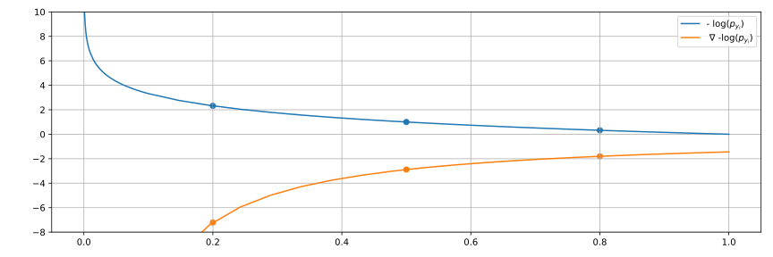
- Gradient: $0.2$ ⇒ $-7.21$, $0.5$ ⇒ $-2.89$, $0.8$ ⇒ $-1.80$, $1$ ⇒ $-1.44$
- Example, gradient intensity is the same for:
- $10$ $+$ wrongly classified with an output proba. of $0.2$
- $40$ $-$ correctly classified with an output proba $0.8$
- i.e., lazily predicting systematically $0.2$ (for $+$)
yields a "stable" solution with $10+$ vs $40-$
@:info-slide
# Disclaimer: multiclass $F_\beta$-measure**s**
// todo might style...
@eval-header: return highlightLi($o.s, 2)
# @copy: overview
## Counteracting Imbalance
- Undersampling the majority class $-$
- Oversampling class $+$
- Generating fake $+$
- Using a weighted-classifiers learner
// For models that learn, can reweigh but not perfect (ideal ratio depends on Bayesian error and régularisation etc) can x valid?
@eval-header: return highlightLi($o.s, 3)
# @copy: overview
@:paperattrib #gammann no-libyli
## A Corrected Nearest Neighbor Algorithm Maximizing the F-Measure from Imbalanced Data
- **Rémi Viola**, Rémi Emonet , Amaury Habrard,
**Guillaume Metzler**, Sébastien Riou, Marc Sebban
- ???
## k-NN: $k$ Nearest Neighbor Classification
 - k-NN {.step}
- to classify a new point
- find the closest k points
- k-NN {.step}
- to classify a new point
- find the closest k points
(in the training section)
- use a voting scheme to affect a class
- efficient algorithms
(K-D Tree, Ball Tree)
- Does k-NN still matter? *// yes non-conv thing, easy adaptability, etc*
- non-linear by design (with similarity to RBF-kernel SVM)
- no learning, easy to patch a model (add/remove points) // e.g. ECML
- Limits of k-NN for imbalanced data?
## Limits of k-NN for imbalanced data?
1. k-NN behavior in uncertain areas
- i.e., for some feature vector, the class can be $+$ or $-$
- i.e., the Bayes Risk is non zero
- ✔ not so bad (respects imbalance)
2. k-NN behavior around boundaries
- i.e., what happens if classes are separate but imbalanced
- ✖ sampling effects cause problems
## k-NN at a boundary (1000 $+$)
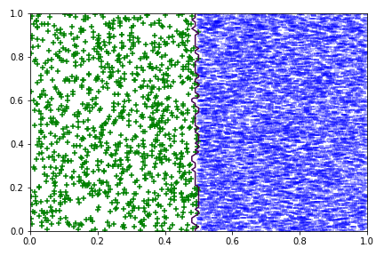
## k-NN at a boundary (100 $+$)
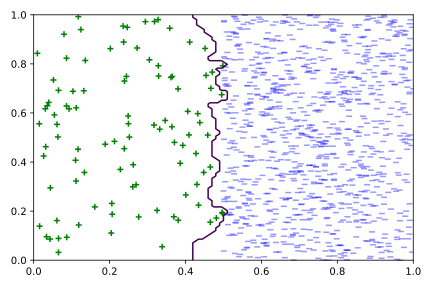
## k-NN at a boundary (10 $+$)
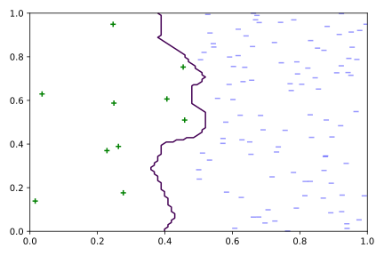
## k-NN: increasing k? // (from 1 to 11)
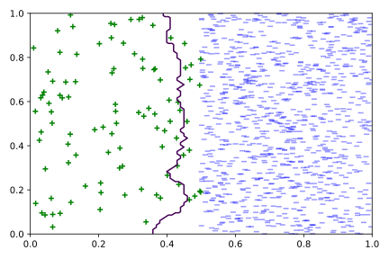 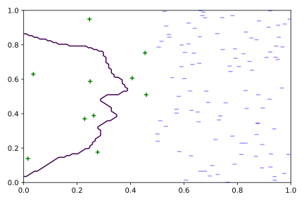
# @copy: gammann
## $\gamma$-NN Idea: push the decision boundary
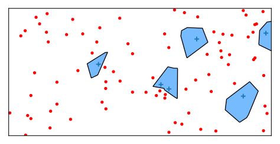  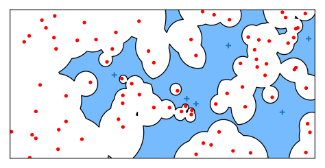
- Goal: correct for problems due to sampling with imbalance
- Genesis: GAN to generate "$+$" around existing ones
- ⇒ unstable, failing, complex @:no
- Approach
- artificially make $+$ closer to new points
- how? by using a different distance for $+$ and $-$
- the base distance to $+$ gets multiplied by a parameter $\gamma$
(intuitively $\gamma \le 1$ if $+$ is rare)
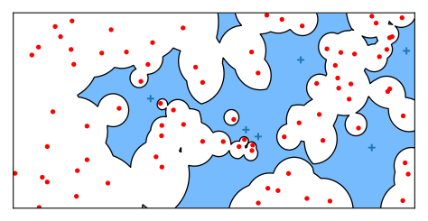
- Goal: correct for problems due to sampling with imbalance
- Genesis: GAN to generate "$+$" around existing ones
- ⇒ unstable, failing, complex @:no
- Approach
- artificially make $+$ closer to new points
- how? by using a different distance for $+$ and $-$
- the base distance to $+$ gets multiplied by a parameter $\gamma$
(intuitively $\gamma \le 1$ if $+$ is rare)
\def{\x}{\mathbb{x}}
d_\gamma(\x,\x_i) = \begin{cases}
d(\x,\x_i) & \text{if} \; \x_i\in S_-,\\
\gamma \cdot d(\x,\x_i) & \text{if} \;\x_i\in S_+.
\end{cases}
## $\gamma$-NN: varying $\gamma$ with two points
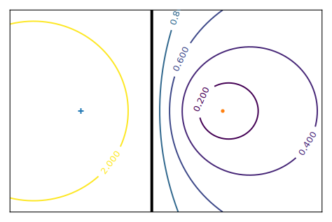
## $\gamma$-NN: varying $\gamma$ with a few $+$
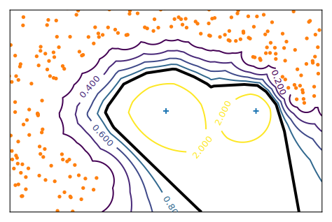 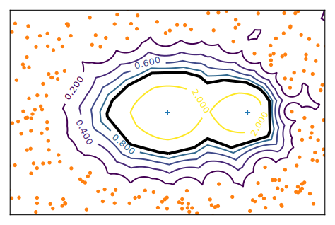
- $\gamma$-NN can control
how close to the $-$s it pushes the boundary
## $\gamma$-NN: Algorithm
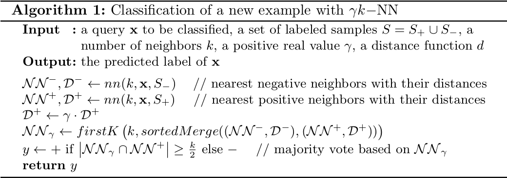
- Trivial to implement
- Same complexity as k-NN (at most twice)
- Training
- none, as k-NN
- $\gamma$ is selected by cross-validation
(on the measure of interest)
## $\gamma$-NN: a way to reweight distributions
- In uncertain regions // when we have more and more points
- At the boundaries // depends on intrisic dimensionality
@:/no-status
## Results on public datasets (F-measure)
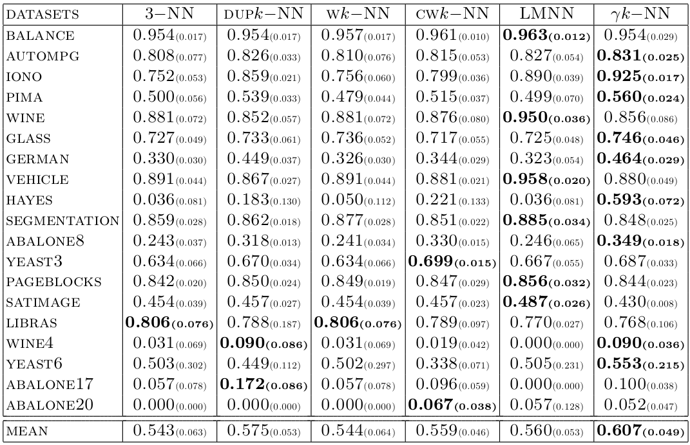
@:/no-status
## Results on DGFiP datasets (F-measure) // underline = second
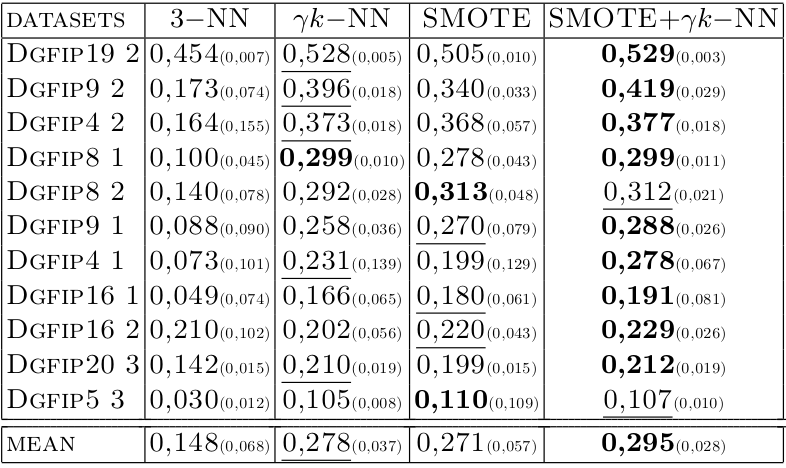
@eval-header: return highlightLi($o.s, 4)
# @copy: overview
@:paperattrib no-libyli
## From Cost-Sensitive Classification to Tight F-measure Bounds
- **Kevin Bascol**, Rémi Emonet, Elisa Fromont, Amaury Habrard,
**Guillaume Metzler**, Marc Sebban
- AISTATS2019
## Optimizing the $F_\beta$-measure?
- Reminder {.padli .densemath}
- Precision: $prec=\frac{TP}{TP+FP}$
- Recall: $rec=\frac{TP}{P} = \frac{TP}{TP+FN}$
- $F_\beta$-measure: $F_\beta = (1+\beta^2)\frac{prec\cdot rec}{\beta^2 \cdot prec + rec}$
- **Non-separability**, i.e. $F_\beta \ne \sum_{(x_i, y_i) \in S}...$
*NB: accuracy is separable, $acc = \sum_{(x_i, y_i) \in S} \frac{1}{m} \delta(y_i - \hat{y_i})$ @:denser*
- ⇒ The loss for one point depends on the others {.no}
- ⇒ Impossible to optimize directly {.no}
- ⇒ Impossible to optimize on a subset (minibatch) {.no}
## Weighted classification for $F_\beta$
- $F_\beta = \frac{(1+\beta^2)\cdot (P - FN)}{1 + \beta^2 P - FN + FP} = \frac{(1+\beta^2)\cdot (P - e_1)}{1 + \beta^2 P - e_1 + e_2}$
{.no}
- The $F_\beta$-measure is linear fractional *(in $e = (e_1, e_2) = (FN, FP)$) @:dense*
- i.e. $F_\beta = \frac{\langle a', e\rangle + b}{\langle c, e\rangle + d} = \frac{A}{B}$ {.no}
- Relation to weighted classification
- $\hphantom{\Leftrightarrow } F_\beta \ge t$ (we achieve a good, above $t$, $F_\beta$ value) {.no}
- $\Leftrightarrow A \ge t\cdot B$ {.no}
- $\Leftrightarrow A - t\cdot B \ge 0$ {.no}
- $\Leftrightarrow (1+\beta^2)\cdot (P - e_1) - t ( 1 + \beta^2 P - e_1 + e_2) \ge 0$ {.no}
- $\Leftrightarrow (- 1 - \beta^2 + t) e_1 - t e_2 \ge - P (1 + \beta^2) + t ( 1 + \beta^2 P)$ {.no}
- $\Leftrightarrow (1 + \beta^2 - t) e_1 + t e_2 \le - P (1 + \beta^2) + t ( 1 + \beta^2 P)$ {.no}
- ⇒ so, we can minimize the weighted problem
with class weights $a(t) = (1 + \beta^2 - t, t)$ {.no}
@:no-libyli
## Inspiration for our work
- **title:** *Optimizing F-measures by cost-sensitive classification*
- **by:** Parambath, S. P., Usunier, N., and Grandvalet, Y.
- **in:** NIPS 2014
- {.no}
- Main result (reformulation) {.step}
- given a value of $t$ that is at most at $\frac{\varepsilon_0}{2}$ from the optimal $t^\star$
- given a weighted-classification learner
- then the optimal $F^\star$ is not too far from the observed $F$
- They conclude that grid search on $t$ is sound
i.e., we'll get arbitrary close to the optimal $F_\beta$-measure
*(and they experiment with 19 $t$ values) @:dense* {.step}
## Geometric interpretation of bounds
- A reinterpretation of the bound // (and/or its derivations)
- given
- a value of $t$ (and class weights $a(t)$), and
- a weighted-classifier $h$ (learned with weight $a(t)$)
- … yielding an error profile $e$ and a correponding $F_\beta(e)$
- **then**\*, for any $t'$ (that would yield a classifier $e'$),
- *(if $t'$ is close to $t'$ then $F(e')$ is close to $F(e)$) @:dense*
- $F(e')$ is upper bounded by an expression linear in $|t - t'|$ // cannot go higher
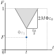
\* All bounds are up to $\varepsilon_1$, the sub-optimality of the learned weighted classifier @:footnote
## Visualizing the bound of Parambath et al.
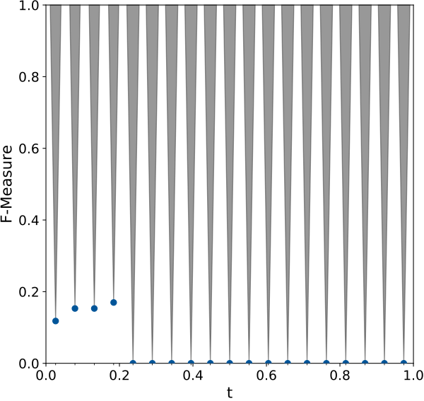
## Deriving a tighter bound
- Same objective: drawing cones
- New, tighter, asymmetric bounds
- Given
- all definitions
- NB: $\varepsilon_1$ the sub-optimality
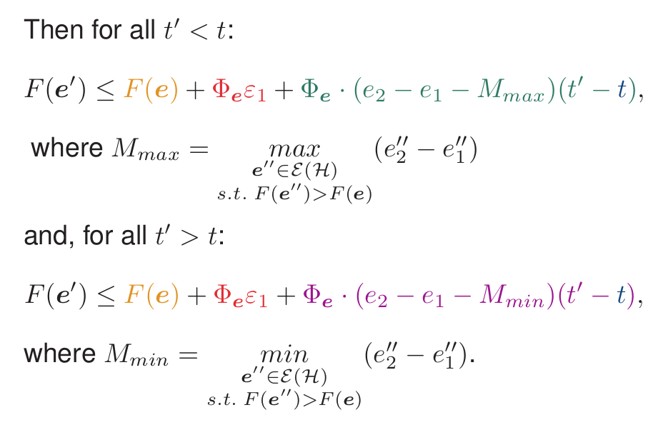
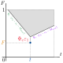
## Visualizing the bound of Parambath et al.
## Visualizing our bound
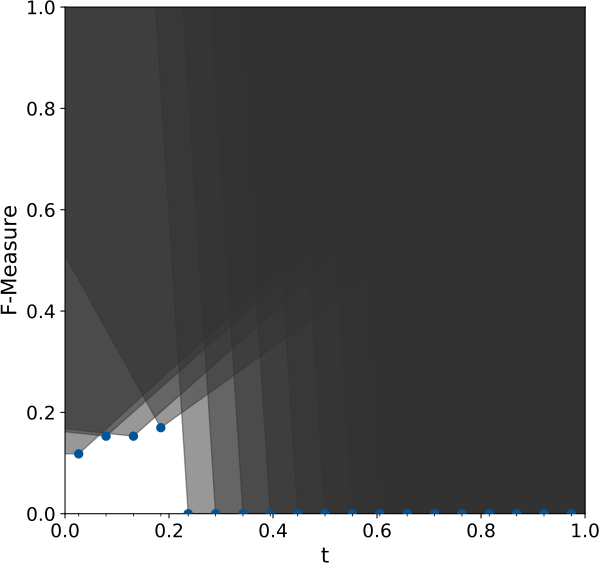
## Using the bound to better explore $t$ values
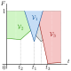
## CONE: example results
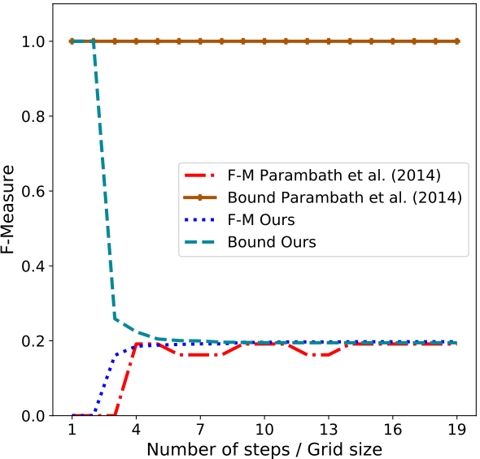 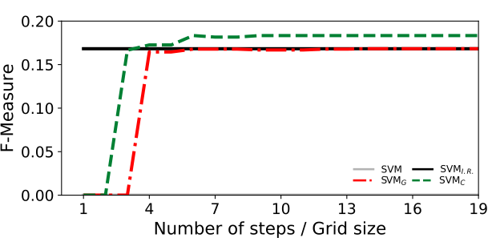
Non-vacuous bounds, incremental algo., early increase.
## CONE: numerical results
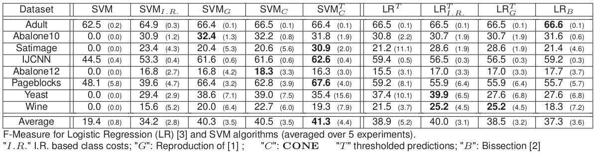
No huge gain, better $F$-measure in average.
## CONE: Perpsectives
- We
- provided a geometric interpretation as cones
- derived new, tighter bounds
- proposed a search algorithm using the bounds
- Work in progress
- bounds in generalization
- lower bounds
@eval-header: return highlightLi(3, 1)
# @copy: overview
## Interpretability
- Why, what
## Example of interpretable patterns
- We overlay on the series
the pattern that were most relevant
to the decision taken by the classifier
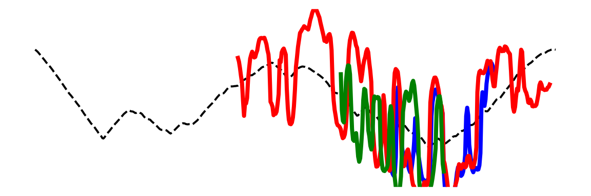  - What side (left or right) would be more convincing?
## Approaches towards interpretability
- Black box models
- Intepretability by design
- constraints from the model structure
@eval-header: return highlightLi(3, 2)
# @copy: overview
@:paperattrib no-libyli
## Learning Interpretable Shapelets for Time Series Classification through Adversarial Regularization
- **Yichang Wang**, Rémi Emonet, Elisa Fromont, Simon Malinowski,
**Etienne Menager, Loic Mosser**, Romain Tavenard
- ??? + arxiv2019
@:/no-status
## Adversarial Input↔Parameter Regularization (*AI↔PR@:accro*) {.dense}
- What side (left or right) would be more convincing?
## Approaches towards interpretability
- Black box models
- Intepretability by design
- constraints from the model structure
@eval-header: return highlightLi(3, 2)
# @copy: overview
@:paperattrib no-libyli
## Learning Interpretable Shapelets for Time Series Classification through Adversarial Regularization
- **Yichang Wang**, Rémi Emonet, Elisa Fromont, Simon Malinowski,
**Etienne Menager, Loic Mosser**, Romain Tavenard
- ??? + arxiv2019
@:/no-status
## Adversarial Input↔Parameter Regularization (*AI↔PR@:accro*) {.dense}
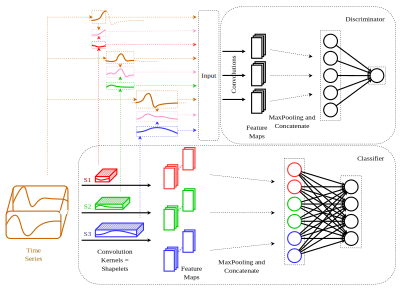
## Optimal Transport, Duality and Adversarial Learning
- L_d(\theta_d) = \mathop{\mathbb{E}}_{\tilde{x}\sim\mathbb{P}_{S}} \left[ D(\tilde{x}) \right] - \mathop{\mathbb{E}}_{x\sim\mathbb{P}_{x}} \left[D(x)\right] + \lambda \mathop{\mathbb{E}}_{\hat{x}\sim\mathbb{P}_{\hat{x}}}\left[(||\nabla_{\hat{x}}{D(\hat{x})}||_2-1)^2\right]
- Gradient penalty
- Interpolation to cover the space
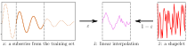
## 3 Losses for 3 Phases
- Classifier training
\;\;\;\;L_C(\theta_c) = ...
- Discriminator Training, using fixed shapelets
\;\;\;\;L_d(\theta_d) = \mathop{\mathbb{E}}_{\tilde{x}\sim\mathbb{P}_{S}} \left[ D(\tilde{x}) \right] - \mathop{\mathbb{E}}_{x\sim\mathbb{P}_{x}} \left[D(x)\right] + \lambda \mathop{\mathbb{E}}_{\hat{x}\sim\mathbb{P}_{\hat{x}}}\left[(||\nabla_{\hat{x}}{D(\hat{x})}||_2-1)^2\right]
- Shapelet regularization, using the fixed discriminator
\;\;\;\;L_r(\theta_s) = - \mathop{\mathbb{E}}_{ {\tilde{x}}\sim\mathbb{P}_{S}}[D(\tilde{x})]
@:/no-status
## Algorithm
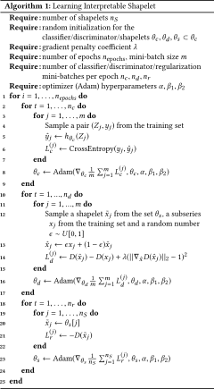
## Discriminator work across iterations
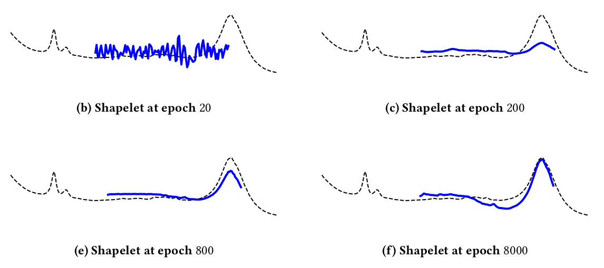
## Results on 85 datasets (vs Fast Shapelets)
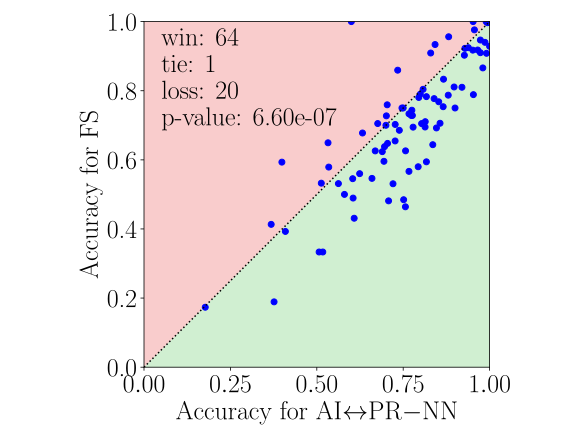
## Results *(vs Learning Shapelets, non-interpretable)@:dense*
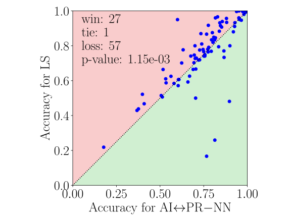
@eval-header: return highlightLi(3, 3)
# @copy: overview
## More...
- Perspectives around *AI↔PR@:accro*
- multivariate
- group-lasso used well
- deeper regularization
- Other interpretable families of methods
- probablisistic models
- auto-encoders with regularizations and constraints
- neural EM etc
@eval-header: return highlightLi(4, 1)
# @copy: overview
@:/title-slide
# Thank you! Questions?